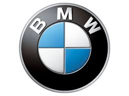

| Home | About us | Contact us | Subscribe us |
|---|
This article is about the German automobile and motorcycle manufacturer. For other uses, see BMW (disambiguation). Page semi-protected Bayerische Motoren Werke AG BMW.svg BMW-HQ.jpg BMW headquarters in Munich, Germany Type Aktiengesellschaft (AG) Traded as FWB: BMW Industry Automotive Predecessor(s) Rapp Motorenwerke Bayerische Flugzeugwerke AG (BFW)[1] Dixi Automobil Werke AG Founded 7 March 1916 Founder(s) Franz Josef Popp Headquarters Munich, Bavaria, Germany Area served Worldwide Key people Norbert Reithofer (CEO) Joachim Milberg (Chairman of the supervisory board) Adrian van Hooydonk (Vice-President) Karim Habib (Director of Design) Products Luxury Vehicles, motorcycles, bicycles Production output 1,861,826 Automobiles (2012) 125,284 Motorcycles (2012) Revenue €76.84 billion (2012)[2] Operating income €8.30 billion (2012)[2] Profit €5.12 billion (2012)[2] Total assets €131.85 billion (2012)[2] Total equity €30.40 billion (2012)[2] Employees 105,876 (2012)[2] Divisions Mini BMW Motorsport BMW i BMW Motorrad Subsidiaries List[show] Website BMW Group Bayerische Motoren Werke AG (About this sound pronunciation (help·info); English: Bavarian Motor Works), commonly known as BMW or BMW AG, is a German automobile, motorcycle and engine manufacturing company founded in 1916. BMW is headquartered in Munich, Bavaria. It also owns and produces Mini cars, and is the parent company of Rolls-Royce Motor Cars. BMW produces motorcycles under BMW Motorrad. In 2012, the BMW Group produced 1,845,186 automobiles and 117,109 motorcycles across all of its brands. BMW is part of the "German Big 3" luxury automakers, along with Audi and Mercedes-Benz, which are the three best-selling luxury automakers in the world.[3][4] Contents 1 History 2 Shareholder structure 3 Production 3.1 Worldwide sales 3.2 Annual production 4 Motorcycles 5 Automobiles 5.1 New Class 5.2 Current models 5.3 M models 6 Motorsport 6.1 Motorsport sponsoring 6.2 Motorcycle 6.3 Formula One 6.4 Sports car 6.5 Touring car 6.6 Rally 7 Sponsorships 8 Environmental record 9 Bicycles 10 BMW nomenclature 10.1 Exceptions 11 Carsharing services 12 Community 12.1 BMW slang 12.2 The arts 12.3 April Fools 13 Overseas subsidiaries 13.1 Canada 13.2 China 13.3 Egypt 13.4 India 13.5 Japan 13.6 Mexico 13.7 South Africa 13.8 United States 14 Marketing 14.1 Audio logo 14.2 Roundel logo 15 Theft using OBD 16 See also 17 References 18 External links
The first car which BMW successfully produced and the car which launched BMW on the road to automobile production was the Dixi, it was based on the Austin 7 and licensed from the Austin Motor Company in Birmingham, England. BMW's first significant aircraft engine was the BMW IIIa inline-six liquid-cooled engine of 1918, much preferred for its high-altitude performance.[10] With German rearmament in the 1930s, the company again began producing aircraft engines for the Luftwaffe. Among its successful World War II engine designs were the BMW 132 and BMW 801 air-cooled radial engines, and the pioneering BMW 003 axial-flow turbojet, which powered the tiny, 1944–1945–era jet-powered "emergency fighter", the Heinkel He 162 Spatz. The BMW 003 jet engine was tested in the A-1b version of the world's first jet fighter, the Messerschmitt Me 262, but BMW engines failed on takeoff, a major setback for the Emergency Fighter Program until successful testing with Junkers engines.[11][12] Towards the end of the Third Reich BMW developed some military aircraft projects for the Luftwaffe, the BMW Strahlbomber, the BMW Schnellbomber and the BMW Strahljäger, but none of them were built.[13][14] By the year 1959, the automotive division of BMW was in financial difficulties and a shareholders meeting was held to decide whether to go into liquidation or find a way of carrying on. It was decided to carry on and to try to cash in on the current economy car boom enjoyed so successfully by some of Germany's ex-aircraft manufacturers such as Messerschmitt and Heinkel. The rights to manufacture the Italian Iso Isetta were bought; the tiny cars themselves were to be powered by a modified form of BMW's own motorcycle engine. This was moderately successful and helped the company get back on its feet. The controlling majority shareholder of the BMW Aktiengesellschaft since 1959 is the Quandt family, which owns about 46% of the stock. The rest is in public float.
BMW acquired the Hans Glas company based in Dingolfing, Germany, in 1966. Glas vehicles were briefly badged as BMW until the company was fully absorbed. It was reputed that the acquisition was mainly to gain access to Glas' development of the timing belt with an overhead camshaft in automotive applications,[15] although some saw Glas' Dingolfing plant as another incentive. However, this factory was outmoded and BMW's biggest immediate gain was, according to themselves, a stock of highly qualified engineers and other personnel.[16] The Glas factories continued to build a limited number of their existing models, while adding the manufacture of BMW front and rear axles until they could be closer incorporated into BMW.[17]
In 1992, BMW acquired a large stake in California based industrial design studio DesignworksUSA, which they fully acquired in 1995. In 1994, BMW bought the British Rover Group[18] (which at the time consisted of the Rover, Land Rover and MG brands as well as the rights to defunct brands including Austin and Morris), and owned it for six years. By 2000, Rover was incurring huge losses and BMW decided to sell the combine. The MG and Rover brands were sold to the Phoenix Consortium to form MG Rover, while Land Rover was taken over by Ford. BMW, meanwhile, retained the rights to build the new Mini, which was launched in 2001.
Chief designer Chris Bangle announced his departure from BMW in February 2009, after serving on the design team for nearly seventeen years.[19] He was replaced by Adrian van Hooydonk, Bangle's former right-hand man. Bangle was known for his radical designs such as the 2002 7-Series and the 2002 Z4. In July 2007, the production rights for Husqvarna Motorcycles was purchased by BMW for a reported 93 million euros. BMW Motorrad plans to continue operating Husqvarna Motorcycles as a separate enterprise. All development, sales and production activities, as well as the current workforce, have remained in place at its present location at Varese.  In June 2012, BMW was listed as the #1 most reputable company in the world by Forbes.com.[20] Rankings are based upon aspects such as "people's willingness to buy, recommend, work for, and invest in a company is driven 60% by their perceptions of the company and only 40% by their perceptions of their products."
Motorcycles See also: BMW Motorrad and History of BMW motorcycles The R32 motorcycle, the first BMW motor vehicle. BMW began production of motorcycle engines and then motorcycles after World War I.[25] Its motorcycle brand is now known as BMW Motorrad. Their first successful motorcycle, after the failed Helios and Flink, was the "R32" in 1923. This had a "boxer" twin engine, in which a cylinder projects into the air-flow from each side of the machine. Apart from their single-cylinder models (basically to the same pattern), all their motorcycles used this distinctive layout until the early 1980s. Many BMWs are still produced in this layout, which is designated the R Series. During the Second World War, BMW produced the BMW R75 motorcycle with a sidecar attached. Having a unique design copied from the Zündapp KS750, its sidecar wheel was also motor-driven. Combined with a lockable differential, this made the vehicle very capable off-road, an equivalent in many ways to the Jeep. In 1982, came the K Series, shaft drive but water-cooled and with either three or four cylinders mounted in a straight line from front to back. Shortly after, BMW also started making the chain-driven F and G series with single and parallel twin Rotax engines. BMW R1200RT